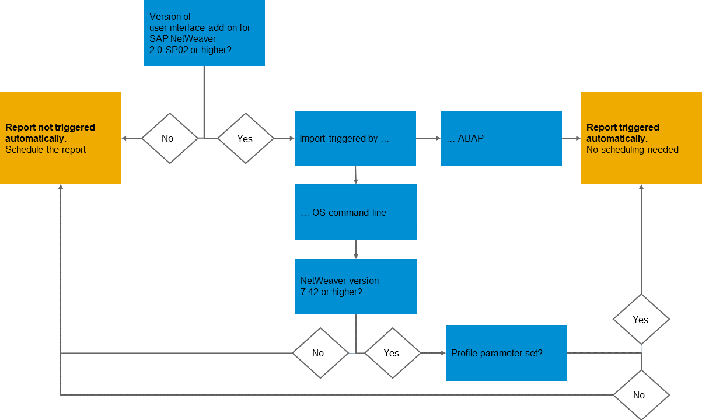

SAPUI5 Application Index
The SAPUI5 application index (the index in the following) provides an indexing and caching mechanism for information related to apps, components, and libraries in the SAPUI5 ABAP repository and related to components and libraries in the SAPUI5 distribution layer.
The index is used by several different services (such as the SAP Fiori launchpad and cache buster), which means you have to define the execution of the report /UI5/APP_INDEX_CALCULATE as a background job. Descriptor and component IDs used in single SAPUI5 repositories have to be unique and valid. For more information, see below.
The index makes it possible to retrieve and find this information significantly faster than when carrying out the calculations each time it's requested. The index is also required, for example, for finding the paths to SAP Fiori libraries.
-
Cache busting information on the level of single and multiple application resources
-
Certain properties or attributes (for example, component ID, used library, or dependencies) stored in the descriptor for apps, components, and libraries
For more information, see Descriptor for Applications, Components, and Libraries.
The index is empty initially and needs to be calculated from scratch. It is calculated by the report Calculation of SAPUI5 Application Index for SAPUI5 Repositories (/UI5/APP_INDEX_CALCULATE). This report replaces the report /UI5/UPDATE_CACHEBUSTER used in the user interface add-on 1.0 for SAP NetWeaver. The report /UI5/APP_INDEX_CALCULATE has to be executed in every system whenever the content of the SAPUI5 ABAP repository has changed. There are several scenarios in which the update of the calculation is performed automatically, but this isn’t ensured in every case. To be on the safe side, we recommend that you schedule an execution of the report every 30 minutes with the default settings (see below).
The report allows you to specify the basis for the calculation of the index. Here’s what you can choose from:
-
Full update of all SAPUI5 repositories and the distribution layer regardless of any expiration dates
This mode is active when you use the provided variant SAP&ALL.
-
Calculation for those repositories and the distribution layer for which either the expiration period you specified (in hours and minutes) has expired or where a transport changed the content of the repositories and the distribution layer since the last update
NoteThis is the default mode with an expiration period of 24 hours. We recommend that you run the report with this option and schedule a periodic execution every 30 minutes.
-
A single repository
-
The SAPUI5 distribution layer only
Changes to the content of the SAPUI5 ABAP repository require the index to be updated using the calculation report /UI5/APP_INDEX_CALCULATE. In general there are two scenarios where content is changed:
-
Scenario 1: The content is changed, for example, by uploads from development tools like SAP Web IDE or Eclipse, the available SAPUI5 repository upload and download reports, the implementation of an SAP Note, or manual changes using transaction SE80 (the latter is not supported and therefore not recommended at all). This scenario usually happens in development systems.
-
Scenario 2: New content is transported to the repository. This scenario usually happens in test and production systems.
Scenario 1
In the first scenario, the index update is in most cases triggered automatically. Exceptions: implementation of SAP Notes, changes to texts in the text repository with ABAP translation tools, and manual changes using transaction SE80 (not supported and therefore not recommended). In these cases, you have to trigger an update for the applications in question manually or schedule a full index calculation of the index with a reasonable time interval. Here’s an overview:
|
Type of change to the SAPUI5 ABAP repository |
Report Run Required? |
|---|---|
|
Deployment with SAP Web IDE |
No, the update is performed automatically. |
|
Upload with report /UI5/UI5_REPOSITORY_LOAD |
|
|
Synchronization from Eclipse using the team repository provider (version 1.30.x or higher) |
|
|
Installation of a new version of the SAPUI5 distribution layer (SAP Note 2209229 is applied in the system for user interface add-on for SAP NetWeaver 2.0 SP01.) |
|
|
Synchronization from Eclipse using the team repository provider (version 1.28.x or below) |
Yes, perform the update manually for the app or distribution layer in question. |
|
Implementation of an SAP Note containing changes for an SAPUI5 app |
|
|
Installation of a new version of the SAPUI5 distribution layer (SAP Note 2209229 is not applied in the system for user interface add-on for SAP NetWeaver 2.0 SP00.) |
|
|
Manual changes using transaction SE80 (not supported and therefore not recommended) |
Scenario 2
In the second scenario, the system performs an automatic update of the index after transports have been imported into the system under certain conditions, for example, which version of the user interface add-on for SAP NetWeaver is installed and whether the Business Add-In (BAdI) CTS_IMPORT_FEEDBACK is called after an import. For more information, see SAP Note 2253480.
If you are unsure whether the BAdI is called, you can verify this in the import log of a transport. The BAdI is called if the import log contains a Feedback after import or export entry (there might be one after import and one after export entry) and the after import entry contains the following logs:
-
Start: Executing method FEEDBACK_AFTER_IMPORT for business add-on CTS_IMPORT_FEEDBACK
-
Scheduled index update after finished import of transports
Here’s how you can decide whether you need to schedule the report:
If the version of the user interface add-on for SAP NetWeaver is lower than 2.0 SP02, the report is not triggered automatically and you have to schedule it manually. If the version is 2.0 SP02 or higher and the import is triggered by ABAP, the report is triggered automatically. If the import is triggered by OS command line (not by ABAP) and the NetWeaver version is lower than 7.42, the report is not triggered automatically. If the NetWeaver version is 7.42 or higher and the profile parameter is set, the report is triggered automatically. If the profile parameter is not set, the report is not triggered automatically.
If you have to schedule the report, there are three options for this:
-
With a periodic time interval
This is the easiest way. However, it has the small disadvantage that some time might elapse between the import of a transport and the start of the update depending on the interval you choose.
-
Starting after event SAP_IMPORT_STO
This triggers the report automatically after all transports of the import queue have been imported. However it doesn’t trigger the report in cases where you perform a special import of a single transport.
-
Schedule the report in both ways
This is the most secure and fast way to ensure the index is up-to-date. The report ensures that no problems occur in cases where multiple executions are triggered in parallel.
The component IDs used in single repositories have to be unique and valid. Unique means that the same component ID must not be contained in more than one single repository. Valid means that the component ID fulfills the following rules:
- Consists only of alphanumeric characters
- Contains only lowercase letters in all segments except the last segment; the last segment may contain camel case letters
- Does not begin with a number
- Does not contain special characters
- Contains a dot (.) as a separator of the namespace
- Is no longer than 70 characters; each individual segment is no longer than 40 characters (separated by a dot)
To check whether a component ID is unique and valid, you can use the ATC check
UI5 Component Consistency Check
(UI5_COMP). To check a component manually, select it in ABAP Workbench (transaction
SE80) and choose  Check
Check  ABAB Test Cockpit with…
ABAB Test Cockpit with…  from the context menu. Choose the Checks tab
and under Functionality select UI5
Component Consistency Check. Choose Execute
Checks (F8).
from the context menu. Choose the Checks tab
and under Functionality select UI5
Component Consistency Check. Choose Execute
Checks (F8).
We recommend that your administrator defines the UI5_COMP check as a default check for all transports to the SAPUI5 ABAP repository.
The UI5_COMP check also indicates any errors that occurred when the manifest.json file was parsed.
Any issues during the recalculation of the index are written as the following messages to the application log:
|
Message Type |
Classification |
What's the Issue? |
|---|---|---|
|
Error |
Very high |
Exception because manifest.json file is not valid or cache buster token could not be calculated |
|
Error |
High |
Component ID occurs or is used more than once |
|
Warning |
Medium |
Component ID is potentially not valid |
To access the application log, choose View … Logs in the report /UI5/APP_INDEX_CALCULATE. The application log is also persisted in client 000 by default and can be analyzed using transaction SLG1.
Technically, the application log is referenced by the object /UI5/APPIDX. This object has the following subobjects:
|
Subobject |
What Does It Contain? |
|---|---|
|
GENERAL |
General information like time and duration of the last calculation of the index, number of single repositories, and number of updated table entries |
|
UI5REP |
Error messages that occurred when a single repository was processed The external ID is the name of the single repository. |
|
UI5COMP |
Component-related messages from a consistency check carried out at the end of the calculation of the index The consistency check includes the following:
The external ID is the component ID. |
The application log contains only entries of the last run of the report /UI5/APP_INDEX_CALCULATE and any older entries are removed automatically. For more information, see SAP Library for SAP NetWeaver at http://help.sap.com/nw_platform. Under Application Help, open SAP NetWeaver Business Warehouse and search for Analyze Logs.
To monitor the execution of background jobs, you can use Computing Center Management System (CCMS). For example, you can set up alerts for the report /UI5/APP_INDEX_CALCULATE by using the data collection method CCMS_BATCH_MONITORING and the analysis method CCMS_BP_MON_ANALYZE.
This monitoring refers only to the executions of the job itself. It does not detect any application log entries with problems created by the report.
For more information, see SAP Library for SAP NetWeaver at http://help.sap.com/nw_platform. Under Application Help, open SAP NetWeaver Business Warehouse and search for Monitoring Jobs with the Alert Monitor and Setting Up the Monitoring of Jobs with the Alert Monitor.
To monitor the calculation results, you might want to build CCMS methods that evaluate the application logs for the object /UI5/APPIDX and the subobjects GENERAL, UI5REP, and UI5COMP. For more information, see SAP Library for SAP NetWeaver on SAP Help Portal at http://help.sap.com/nw_platform. Under Application Help, open SAP NetWeaver Business Warehouse and search for Creating a Data Supplier for the CCMS Alert Monitor and Application Log (BC-SRV-BAL).